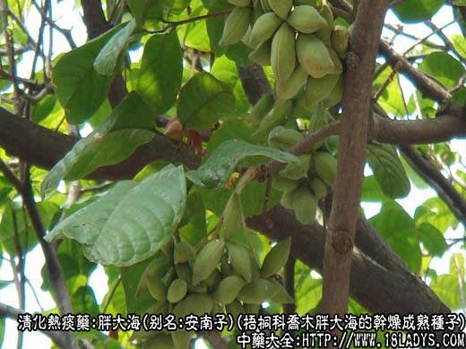
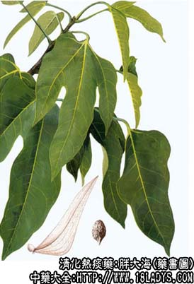

原文连接:https://www.daquan.com/post/2197.html



胖大海为常用中药，始载《本草纲目拾遗》。
别名：大海、膨大海、安南子。
来源：为梧桐科植物落叶乔木胖大海的干燥成熟种子，为进口商品。
产地：越南、泰国、印尼、马来西亚、缅甸、柬埔寨、老挝等地。
性状鉴别：种子呈椭圆形，长约2~3厘米，直径1~1.5厘米，先端钝圆，基部略尖。表面棕色或暗棕色，微有光泽，具细密的抽皱沟棱，基端具黄棕色略圆形种脐。外种皮共分为四层，外表层薄如纸，疏松易剥落，二层为网脉层，棕黑色较厚，断面有光泽，遇水即膨大成海绵状（故名胖大海），第三层棕色，内层淡黄棕色，均略革质，内包子叶两片，暗棕色。气微味淡。
以种子粒大，无破碎者为佳。
主要成分：种皮含粘渔皮。另含半乳糖、戊糖、阿拉伯糖等。
功效与作用：清肺热、开肺气、润燥、通便。
1、消炎。作用原理未全明了，实验已知胖大海对流感病毒PR8株有较强的抑菌作用。
2、缓泻。其外皮、软壳皮吸水量大，服后增加肠内容积，产生机械性刺激促进肠蠕动而通便，此外也可能与其对副交感神经的作用有关。
3、降压。其种仁的煎液有降血压作用。
此外：临床观察还有利尿和止痛作用。
炮制：生用。
性味：甘淡，微寒。
归经：入肺、大肠经。
功能：开肺解表，清热利咽，通便。
主治：风热失音，咳嗽、咽喉肿痛。
临床应用：1、用于开音，治风火犯喉而致的声音嘶哑（属肺热声哑，如急性咽喉炎），配菖蒲，薄荷等焗服，方如开音饮。此方对消除造局部炎症、水肿，从而减轻声哑有帮助。
2、用于通便，适宜于头目风热疾患（如外感风热而致的头痛、牙痛眼红肿痛）合并有大便热结者，单用即有通便清热的效果，可用12~15粒，以沸水冲浸，然后去皮除核，加入白糖和匀，一日分2~3次服用。
3、用于透疹，治麻疹出疹不快，以胖大海、芫荽煮水敷洗，有较好效果。
用量：内服一般每次1~4枚，每日2~3次。外用适量。
处方举例：开音饮：胖大海1~2枚，菖蒲4.5g，薄荷2.1g，沸水焗服。
注：过去多认为新加坡大海品质最佳又名星大海。据了解新加坡并非产地，而是集散口岸，胖大海到新加坡后，多进行挑选，分等出售。根据解放后进口的胖大海观察，认为越南产品颗粒较大椭圆形，表皮棕色，少破碎，品质较佳。